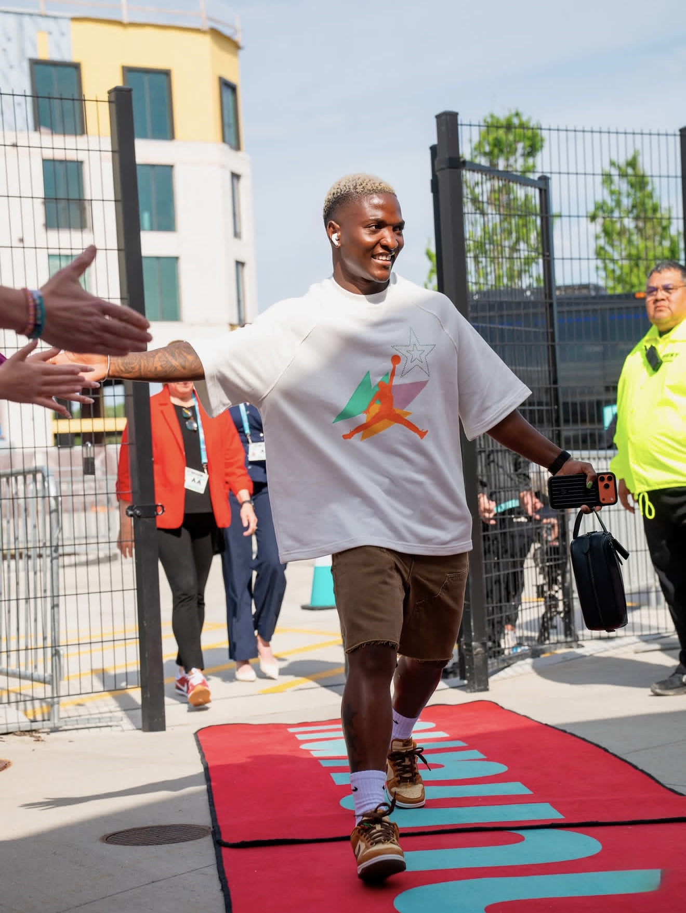

Kane ends England’s wait. Putellas makes it three.
Harry Kane and Alexia Putellas lead a night of winners, records and new ground for the Ballon d’Or in London.

Harry Kane and Alexia Putellas took the two biggest prizes at the 2026 Ballon d’Or, a ceremony that brought football’s annual awards to London for the first time. Kane became the first English winner in 25 years; Putellas collected her third women’s award. The night also recognised the season’s leading players across both games, with Malawi’s Temwa Chawinga breaking into the women’s top ten.
The men’s awardKane ends England’s wait
Kane finished ahead of Kylian Mbappé and Lamine Yamal. He is the first English player to win since Michael Owen in 2001. Kane scored 73 goals for Bayern Munich and England across the season.
Bayern won the Bundesliga and DFB-Pokal. England finished third at the 2026 World Cup, where Kane scored six times. Those results give context to his season, not a single explanation for the vote.
The men’s top ten, in order, was Kane, Mbappé, Yamal, Rodri, Lionel Messi, Khvicha Kvaratskhelia, Ousmane Dembélé, Erling Haaland, Michael Olise and Fabián Ruiz. Yamal also won Men’s Young Talent of the Year.
The women’s awardPutellas makes it three
Putellas finished ahead of Barcelona teammate Ewa Pajor and Manchester City’s Khadija Shaw. The win makes her a three-time Women’s Ballon d’Or recipient.
Temwa Chawinga of Malawi placed tenth, the highest finish by an African woman in the award’s history, according to contemporary reporting. Zambia’s Barbra Banda came 18th. Banda had been the previous high-ranking African woman, finishing 12th in 2024. Chawinga’s place gives the award a new African benchmark.

The other trophiesA full field of winners
Lamine Yamal and Vicky López won the men’s and women’s Young Talent awards. Unai Simón and Cata Coll were named Goalkeepers of the Year; Spain coach Luis de la Fuente and Barcelona coach Pere Romeu took the coaching awards. Paris Saint-Germain won Men’s Club of the Year, while Barcelona took the women’s prize. Kane and Mexico’s Charlyn Corral won the striker awards. Arsenal and England forward Bukayo Saka received the Sócrates Award for solidarity and social causes.
A London firstThe ceremony leaves Paris
The 70th-edition ceremony was held at the London Palladium on 26 October. London hosted the Ballon d’Or for the first time, with the venue chosen as a tribute to Stanley Matthews, the inaugural winner in 1956. Thirteen awards were presented in all.
How the vote worksMore than a goal count
The award is decided by specialist journalists, using a season window that ran from 3 August 2025 to 19 July 2026. France Football’s criteria put individual performance and decisive impact first, team achievements second, and class and fair play third. The men’s jury comprises journalists from the top 100 FIFA-ranked countries; the women’s jury draws from the top 50. Each juror ranks ten nominees, with points awarded from 15 for first place down to one for tenth.
Sources
- UEFA: Harry Kane wins the 2026 Men’s Ballon d’Or
- England Football: Kane wins and England’s 2026 results
- Bundesliga: Kane, Bayern and the 2025/26 season
- Ballon d’Or: Men’s final ranking
- UEFA: Alexia Putellas wins the Women’s Ballon d’Or
- AS: Full 2026 women’s ranking and Putellas’s third win
- Ballon d’Or: Women’s final ranking
- PUNCH: Temwa Chawinga’s top-ten finish
- Yahoo Sports: Chawinga makes history
- BBC Sport: Barbra Banda’s 2024 ranking
- AS: 2024 women’s rankings
- UEFA: Ballon d’Or ceremony guide
- Le Parisien: Complete list of 2026 winners
- Ballon d’Or: 2026 regulations
- TNT Sports: Voting criteria and points